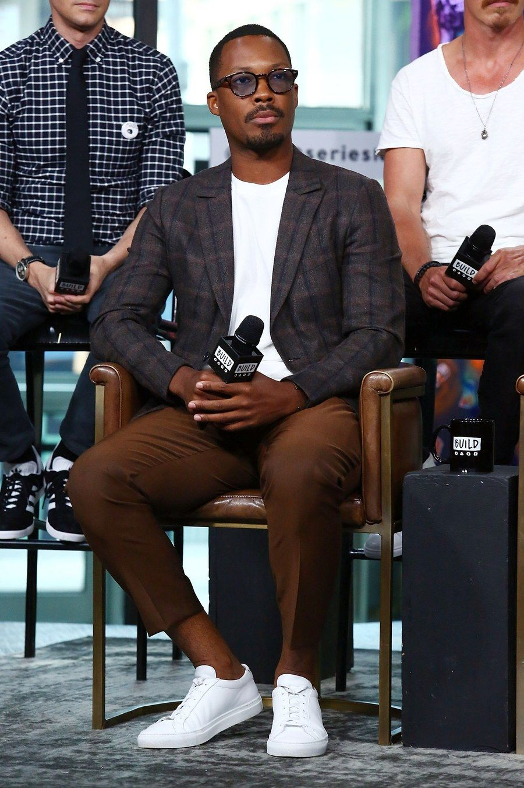
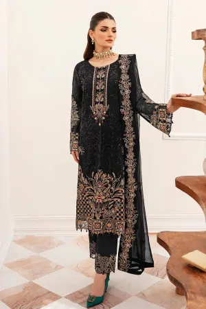
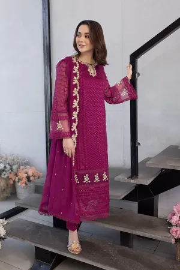
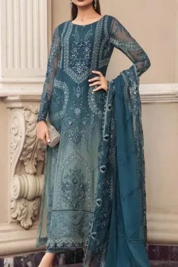

The top 5 style tips for men.
Some men look stylish and put together every time they step out. You get the sense that they don't have to try at all and yet somehow their look just works. Perfectly.
Were they born with an innate skillset you weren't lucky enough to receive? Absolutely not. Are there secrets and style tips for men that they're following? Yes, there most certainly are. Let's call them principles, and in this case, these men pay strict attention to the principles and know how to put them to work.
In an effort to ignore your wardrobe, you may tell yourself that you don't care about the way you look - that your skills and personality are the criteria for which you should be judged, and that your image shouldn't matter. And that's understandable, because if success in this world were based on merit alone, it wouldn't matter. But it's not, and it does.
1. GET CLEAR ON YOURSELF
The first step in establishing your sense of style is to build your message. Think of this as your personal branding – an external package that shows the world exactly who you are on the inside and highlights your strongest qualities.
Begin by asking yourself how you’d like to be perceived by the people you interact with. Choose words that paint a vivid mental picture of the way you want to represent yourself. Adjectives like powerful, charming, sophisticated and intelligent, provide a measurement to assess your image against, so it’s important to get as clear and concise as possible.
When our Personal Stylists begin working with a new male client, selecting these adjectives is the first step in our process. Before knowing what your clothing will look like, it’s imperative that you’re clear on your message.
Keep in mind that you’re always driving your personal narrative, whether you’re conscious of it or not. What do you want your style to say?
2. IDENTIFY YOUR INSPIRATION
Men will often say that they’re just not “inherently stylish”, that they lack the understanding of how to put outfits together or what the ‘rules’ of fashion are. We like to challenge their argument by asking if they can identify someone whose style they admire. A man they want to dress like, even if they have no idea how to assemble the look.
And guess what? 9 times out of 10 they can list multiple references (all good ones), quashing their own assumption that they don’t have a sense of style.
They may not understand the how, which is often the reason they’ve told themselves that they lack an aptitude for fashion. Understanding how to do something is learnable, it’s teachable. But as with any goal, we must first put the framework in place before knowing how to execute it, and when it comes to style, that framework is based on a clear understanding of our preferences.
Whether it’s celebrities, politicians, TV characters, or co-workers, make a list of men you view as consistently well-dressed. This will help you narrow in on your preferences as you begin to identify what they all have in common.
If you feel yourself resisting this exercise, just lean into it and see where the discovery process takes you. As creatures of habit, it’s challenging to envision ourselves wearing something other than what we’re familiar with. For the time being, ignore the natural hesitation to step outside your comfort zone and instead focus only on who and what appeals to you.
3. FOCUS ON AUTHENTICITY
There’s often a misconception with men that they should wear something because it’s in style, because women like it, or simply because it’s what everyone else is wearing. But the problem with this thinking is that when you wear something that isn’t you, you feel like an imposter and it shows.
The clothing you wear is an extension of who you are. It should strengthen your image and be an expression of your true self. So don’t force it. The goal is to build an elevated sense of style based around a wardrobe you feel good in, one that lifts your self-confidence and gets you excited to interact in the world.
This is not to say you’re given a free pass to dress in sweats every day because they make you feel like your truest self. You can do better. Work on choosing pieces that fit with your message (step 1), align with your preferences (step 2), so that the way you present yourself is completely aligned with who you are.
If you’re unsure how you feel in something, take our authenticity test by asking yourself 3 simple questions: Does the outfit feel comfortable or will I be constantly adjusting it? Do I recognize myself in the mirror or am I trying to be someone I’m not? Does this clothing bring me joy and am I excited to wear it? If you answer yes to all 3, you’re good to go. If not, look for another option.

4. WIN THE FIRST IMPRESSION
People instinctively form strong first impressions of you. They do this very quickly and with minimal data – and they base it off the information you provide them with. While you can’t change their behavior, you can alter their perception to your advantage. Why would you want to do this? Because their impression sets the tone for the entire interaction, both in the present moment and throughout the course of your relationship.
How you dress represents who you are and tells people what to expect from you. And when you dress like an average man, you tell everyone you are average, and they should only expect average things from you.
But if you care about your image and are committed to putting in the work, then you are anything but average and should show the world exactly how outstanding you are.
Far too often a lack of attention to wardrobe holds people back. This is frustrating, because clothing certainly doesn’t determine one’s actual competence or credibility; it does however, influence others’ perception of those qualities – and that reality impacts opportunities.
Whether you’re re-entering the dating world, hoping to be considered for a promotion, or striving to land bigger clients, your image plays a role in the success of your outcomes. Luckily, the clothing you choose to wear and the way you wear it, is completely within your control. If you want to win the first impression, then take hold of your narrative and learn to dress in a way that shows the world you are far from average.
5. USE CLOTHING TO BUILD CONFIDENCE
A strong sense of confidence is what separates the men who operate within their comfort zone from those who go after bigger career opportunities, seek out new clients, ask for a raise, and take more chances in their dating life. It’s what drives them to make their voices heard and their presence felt, even when life tells them they’d be better off playing it safe.
When it comes to building confidence, often the right wardrobe can work like a suit of armor to give the extra boost you need to not just look the part, but to feel it too, and carry yourself accordingly. Putting on nice clothing makes you feel powerful, and that changes the basic way you see the world and the role you play in it. When used correctly, it fosters the ability for you to feel empowered, comfortable in your own skin, and above all else confident.
As you begin to develop your sense of style, learn to acknowledge that nice clothing is much more than just nice clothing. It’s your uniform for battle, worn to help you feel your best and perform at a higher level. It’s your external packaging, telling everyone how seriously you should be taken. Learn to relate to your wardrobe as an integral piece in establishing your self-confidence, without discounting its significance or writing off its necessity.
Pakistani Dress Trends for 2024.
2024 is here, and it’s time to revamp your wardrobe with the latest Pakistani fashion trends. Pakistani dresses are known for their elegance, intricate designs, and rich cultural heritage. This year promises a fusion of tradition and modernity, resulting in some exciting fashion trends. Let’s take a look at the top Pakistani dress trends for 2024.
1. VIBRANT COLORS
In 2024, Pakistani fashion embraces a riot of vibrant colors. From bold reds and electric blues to pastel pinks and serene greens, you’ll find a spectrum of colors to choose from. These vivid shades bring life and energy to your wardrobe, making them perfect for various occasions.
2. SUSTAINABLE FABRICS
Sustainability is not just a trend; it’s a way of life. In 2024, Pakistani fashion designers are increasingly using sustainable fabrics such as organic cotton, hemp, and recycled materials. Embrace eco-friendly choices and contribute to a greener planet while looking stylish.
3. STATEMENT SLEEVES
Sleeves take the center stage in 2024. You’ll see dramatic puffed sleeves, bell sleeves, and ruffled sleeves making a statement in Pakistani dresses. These intricate sleeve designs add a touch of drama and sophistication to your outfit.
4. ASSYMETRICAL HEMLINES
Asymmetrical hemlines are ruling the fashion world in 2024. Pakistani dresses with uneven hemlines are in vogue, providing a modern twist to traditional outfits. They create a unique silhouette and add a sense of movement to your attire.
5. DIGITAL EMBROIDERY
Digital embroidery techniques have evolved, and in 2024, they take center stage. You’ll find intricate digital embroidery on Pakistani dresses, creating stunning patterns and designs. This innovative approach to embroidery adds a touch of luxury to your outfits.
6. FUSION OF EAST AND WEST
2024 brings a fusion of Eastern and Western fashion elements. You’ll see Pakistani dresses with Western-style silhouettes and cuts, combined with traditional Pakistani embroidery and embellishments. This fusion adds versatility to your wardrobe.
7. VINTAGE REVIVAL
Vintage fashion is making a comeback in 2024. You can expect to see dresses inspired by classic Pakistani fashion from the ’60s and ’70s. Vintage prints, high collars, and retro-inspired cuts are all the rage.
8. COORDINATED SETS
Coordinated sets are a convenient and stylish option for 2024. Pakistani dresses come as matching sets, making it easy to put together a chic and trendy look. Coordinated sets are available in various styles, including kurtas with trousers, or shirts with palazzos.
9. LAYERING WITH CAPES
Capes add a touch of elegance and drama to your outfits. In 2024, layering with capes is a fashionable choice. You can pair a traditional Pakistani dress with a cape for a regal and sophisticated look.
10. SUSTAINABLE ACCESORIES
Complete your 2024 Pakistani dress look with sustainable accessories. Opt for eco-friendly jewelry, handcrafted bags, and locally sourced footwear to complement your outfit. In conclusion, 2024 is a year of exciting fashion trends in the Pakistani dress industry. Whether you prefer traditional, fusion, or modern styles, there’s something for everyone. Embrace the vibrant colors, sustainable choices, and innovative designs to make a fashion statement this year. Stay stylish and stay true to your cultural roots with these amazing trends.